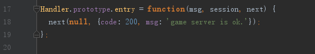

客户端与服务端通信
客户端编写
以helloworld项目为例，打开web-server/public/index.html,可以看到如下代码：
 客户端从发送request请求
客户端从发送request请求connnecor.entryHandler.entry,到服务端，在game-server目录找到app/servers/connector/handler/entryHandler.js,打开这个文件后可以发现了entry这个方法.

这样客户端就发消息到服务端啦。
next则是request请求完，服务端返回的结果,这里是通过回调实现的。